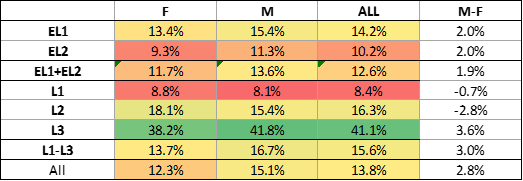
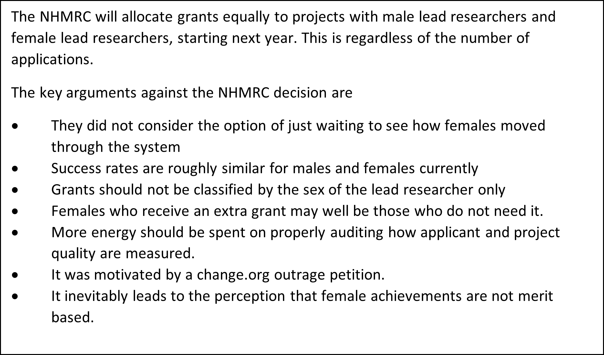

Australia punches above its weight in the medical research space. The National Health and Medical Research Council (NHMRC) is the main government granting agency in the field of medical research. On October 16th, it was announced that future mid-level and senior grants will be awarded to males and females in exactly equal number.
This followed, and was to some extent a reaction to, earlier outrage at some of the 2019-2021 statistics listed below, as well as a change.org petition of which the Council was self-consciously aware. This is despite their own acknowledgment that “funded rates for women and men have been close to equal since 2017”. (2500 words)
What is the background of this decision?
NHMRC grants are highly competitive and only around 14% of applications are successful. Applying is far from a costless exercise and can take many weeks of full time work for the lead researcher. There is already an affirmative action element to grant allocation called Structural Priority Funding. This allocates an additional pool of money to unsuccessful female and non-white applicants until it is exhausted.
The table below is for Investigator Grants which is an important class of grants but not the only class. For instance, Centres for Excellence grants and Synergy grants data suggest that females have enjoyed more success than males. But let’s stick with the Investigator Grants which is what generated all the controversy and is the grant class that the NHMRC have targeted for intervention.
TABLE 1: Applications by gender and seniority
Source: NHMRC discussion paper
Around 60% (34.3%+24.8%) of applications are by junior researchers. These are designated Early Leaders. Sigh...This kind of language speaks to the US style managerialism that has infected much of Australian research and research institutions. A minor point perhaps but culture, especially US culture, is at the heart of this controversy. Nobody wants to be a humble researcher anymore. We need leaders and you best get out from behind the microscope and become a leader as soon as possible.
Amongst these junior applicants, females are the majority and there were 137 successful females compared to 123 males. Indeed, females are the majority of those employed in medical research amongst under 30’s. As we move into the more senior researcher levels though, males dominate applications, largely reflecting their legacy dominance in the industry. And because success rates tend to be higher for more senior applicants this results in more overall grants to male applicants (422 compared to 313). That the demographic skew is the main cause of the gender difference is not just my opinion. It is stated by the NHMRC CEO Ann Kelso last February.
TABLE 2: Success rates by gender and seniority
Source: NHMRC discussion paper

Another way to look at the data is success rates – the proportion of applicants in a given pool who receive a grant, see Table 2. For junior researchers (EL1+EL2) the success rates are 13.6% for males and 11.7% for females. For senior researchers (designated Leaders 1-2) the success rates are 16.7% for males and 13.7% for females. So there does appear to be a modest tendency for male applicants to have a higher chance of success. However, this does not adjust for the assessed quality of the project upon which the NHMRC largely base their decisions.
With the new NHMRC policy, female success rates will be close to twice as high as males success rates. This directly conflicts with the claim of the NHMRC CEO Ann Kelso that the “NHMRC is committed to ensuring that all researchers have equal opportunity to undertake health and medical research regardless of their gender”. Two issues: gender dominance versus gender bias So there are two distinct issues. Males dominate the industry at higher levels of experience, especially L3. There are more male applicants, so there are more grants awarded to males. Second, there is a modest disparity in success rates in favour of males which may or may not be explained by quality. On the first issue of lack of females at senior levels, it has been rather ludicrously claimed that “the largest contributing factor to lack of retention of women in STEMM at higher levels is that women receive fewer grants … due to gender bias in the peer-review system.” So a lack of grants cause females to drop out? Surely, the first order effect is that fewer women in STEMM leads to the fewer grants. Talk about chicken and egg! This “problem of too many males” will likely dissipate over the next twenty years as junior females become more senior. If there are forces that discourage women, such as family care duties, then female quotas are not the way to fix it. Why? Because many females who get affirmative action may not even have children or may be rich enough to afford a full time nanny. Indeed, if they are still in the industry at mid or senior levels then they are, almost by definition, less likely to have been subject to the systemic biases that lead to female attrition. Is the NHMRC going to ask female applicants if they have kids and how much time they spend taking care of them? It would probably be illegal to do so. And what about the (likely much smaller number of) males who have put their career second because of family responsibilities. Why do they not get a free ride? This is a pervasive issue in affirmative action. If you use a crude proxy for disadvantage like sex or race then you deliberately ignore the cause of disadvantage, for instance child care or remote geographical location. Unless the systemic bias is against all females equally, a sex bonus will advantage some already advantaged females, and disadvantage some already disadvantaged males. Sex based intervention should be an absolute last resort. It is as ludicrous as giving a height based salary bonus to shorter people because males are taller and they are paid more. You kind of miss the point if you legislate to correct the gender skew with a height bonus. Short males will be the winners and tall females will be the losers. The second problem of gender differentials in success rates deserved some serious study but there was nothing in the NHMRC discussion paper that got to the heart of the matter. There are some throw away lines that it is “difficult to see and measure the biases of those who are evaluating applicants for appointments, promotions and grants.” It is not as difficult as claimed. Gender blind versions of an application could easily be used to get a sense of this. Projects are assessed on the quality of the researcher, which is based on their track record, and the project itself. Are there any gender (or more generally identity) blind measures of quality of the researcher that could be used? I would be strongly in favour of this and have lobbied hard to include identity free assessment of job applicants here at University of Melbourne, with some success. Is it possible the quality of the female led projects was lower? The data in the NHMRC discussion paper suggest a modest difference. If so, is it an artifact of bias? And if so, how can we remove it? If you mention quality and merit in some places, you are liable to be shouted down. If the NHMRC are not in the quality and merit business, then they need to be closed down. It may not be straightforward but it is not impossible either. Journals publish papers, universities appoint and promote. And there is a market to challenge and replace journals and universities that systematically get it wrong. Especially in medical research where huge patents are in the offing. Identity doesn’t matter and is ill-defined anyway Does it really matter how many grant holders are male or female, so long as the allocation is merit based? To some it does but not to me or anyone with a clear moral compass. If 100% of successful applicants were from Iceland I would not care at all in principle. Certainly such an extreme skew in recipient demographics could be a possible indicator of a systemic problem. There may be some subtle Icelandic bias which I would look for and correct if I found it. But “too many” Icelandic researchers is not a problem in itself. Alas, too many male researchers seems to be. But there is another more important point to make in relation to the entire framing of the issue by the NHMRC. Why are grants being classified according to the sex of the lead researcher? It is the obsession with leadership again. The leader is one of many who benefit from a grant. For instance, L3 grants tend to be larger and employ many junior post-docs. Most of these will likely be women! A more sensible analysis would be based on the sex of the beneficiary, not of the grant holder. But the gender skew would not then be so stark and would not generate so many angry tweets. What about diversity? Many claim that diversity is an important driver of better science. This is based on various artificial laboratory experiments that manipulate team profiles and measure their success on well-defined decision tasks. There is less evidence for a diversity dividend outside the laboratory. Diversity, in any case, has little to do with Y-chromosomes. Where is the evidence that gender predicts different medical research approaches and frameworks that would lead to a diversity dividend? The wisdom of crowds is real, but it is not about identity. It is about actual diversity. Moreover, in medical research it is hard to see how diversity is a key driver of excellence at all. Researchers are specialists with a deep understanding of a narrow topic. They are not a random independent sample of the population brain-storming a question that a social scientist has just lobbed in front of them. Newton did not develop his three laws by consensus and committee. He thought about it alone for most of this life. There was no diversity involved at all. Research success requires you to develop a unique combination of expertise and then be single minded in pursuing your research agenda, regardless of setbacks and scepticism. Moreover, why does the diversity argument not apply to vocations like primary school teaching where it is becoming increasingly difficult to recruit males? How about psychology in the US where 71% are female and, amongst under 30s, 95% are female? It is clear where the trend is heading. And the gender of your teacher or psychologist is surely more important than your unseen medical researcher. I don’t care about their identity. I only care about the research. And the elephant in the room is that those who assess grants are far from diverse. And by this I do not mean white male. They are the survivors of the same competitive decade long vocational process that is as much social and cultural as scientific. The assessors are flattered to be assessing the grants of others, including their betters. And they are only human so they also have their own incentives. With the best will in the world, a researcher in malaria will think that research in malaria is more important than other research. And researchers who are part of the current consensus will tend to receive more favourable assessments than the maverick researcher who wants to disprove the prevailing norms of the assessors. If more of the mavericks were one gender, then we would really miss the point by reacting to the gender skew. The real loss would be the systemic suppression of dissent. And giving gender based bonuses to correct it would have almost no effect. Undermining female achievement Affirmative action inevitably leads to the perception that female achievements are not merit based. This is not just my opinion. Below is an email I received from a very accomplished female data scientist who was scared to have her name published. She is one of several folk who thanked me for challenging this thoughtless NHMRC decision, most of whom were female.
“As someone who has received awards designated for women, I can tell you first hand what a terrible impact they have. Others couldn't help but assume that I'd won them because I'm a woman, not because I deserved them. Worse, I myself didn't know whether I deserved them! Early career researchers in particular do not need additional reasons to doubt themselves. I have children of both sexes, and I fear for them. I want them to be judged on their merits alone, but that wish seems unlikely to come true in the current climate.”
What should the NHMRC have done, if anything? The NHMRC discussion paper reads like polemic. The data analysis is one-sided and incomplete. The only options considered are four different versions of affirmative action The possibility of just waiting for more females to wash through the STEMM population was not countenanced at all. There was no consideration of the possible counterarguments that I have listed above. It is hard to avoid the conclusion that this was all part of a Twitter and change.org motivated movement. The role of the council is primarily to allocate tax-payer funded grants to those projects that will deliver the greatest benefits. Their primary responsibility is to ensure robust allocation of funds through robust evaluation of projects and researchers. Though a broader interpretation of their role might include medium term incentives to attract the best applications. So can they assure us that their assessments are indeed robust and unbiased? No, they really can’t. They should have fully audited all their assessment processes. Are they biased towards any identity group? Are they biased towards consensus positions, whether these be traditional or more modern? How large are these biases? It is still not too late. They should start an audit right now! But I am not optimistic, because I have found that those who claim systemic bias in institutional systems are often loathe to investigate where it is and how strong it is. Rather, they tend to dismiss the possibility of merit based assessment at all and fall back on crude statistical arguments that any deviations from demographic parity indicate bias. So grants should be 50-50 by sex. The NHMRC should present evidence of any bias in (a) project quality assessment, (c) researcher track record assessment and (c) grant success rates. They have the data on the quality assessment of every project, on a 1-7 scale. To what extent does this assessment depend on the sex and age of the assessor as well as how close the project is to their own research area? Do final success rates depend on the gender or age or subject matter of the applicant, over and above their track record and project quality assessment? NHMRC have access to experts in this kind of analytics. This failure to audit and improve the assessment processes is the opportunity cost of focusing on gender counts. But fine grain policy analysis doesn’t generate outrage or change.org petitions. As things stand, can we be confident that the NHMRC are doing their best to fund and encourage the best research? I fear that the ARC will be next1.

1.In fact, I predict it and am happy to take a bet on a three year horizon (definition to be negotiated).
The other reason you want auditing is to get rid of corruption where groups give grants to each other not based on merit, irrespective of obvious differences like you talked about (I believe there are social network analyses out there looking at this). My feeling is that the perception people who are involved in this sort of stuff tend to have is that this is much worse in the NH&MRC than the ARC. In part I suspect this is because the NH&MRC gives out huge grants, whereas the ARC tends to give much smaller ones where fewer people work on them. The other problem I see with the NH&MRC and ECRs is that it basically encourages a model where vast numbers of PhDs and ECRs do all the work and the manager guy at the top sticks his name on everything. Since the system is structured like a pyramid, it must be apriori true that most people will not be able to work in the long term in their field. Since there are endless numbers of PhDs and ECR churned out by these labs, it also means competition for university jobs in those areas is very high. This is compounded by a lot of biomedical training not being very useful for other jobs compared to say, if you did a PhD in engineering where it often will be very useful, and so it is leading to a lot of roads to nowhere.
Agree totally Conrad. The worst thing about the recent decision is the opportunity cost of improving the system.
Thanks for the post Chris. I'm broadly in sympathy with it. But cavilled at your characterisation of medical progress as necessarily being based on narrow specialism — as exemplified by that well known medical researcher Isaac Newton ;) At least in economics it's no accident that Elinor Ostrom was a woman and said outrageous things like this.
Or that Lyn Margoulis was a woman and wouldn't cop the obsession with 'micro-foundations' in evolutionary biology. Or that it was a woman — Elizabeth Anscombe — who began the revolution against modern moral philosophy and pointed the way towards the rebirth of virtue ethics. In medicine, it seems to me that there are broad matters that need to be considered alongside the kind of progress you regard as canonical. Mary Midgley used to speak about this question in terms of the importance of what she called philosophical plumbing. Michael Polanyi produced a theory of scientific integrity that operated through scientists 'overlapping neighbourhoods'. This was a fundamental safeguard of the integrity of the whole fabric, it relied on the breadth of scientists' knowledge alongside their specialisms.
It might not be necessarily based on a narrow window of specialization, but they're the type of projects that get funded, because to get funded, your project needs to be specified extremely well and look like it will produce good outcomes (i.e., generally a done deal -- so Discovery grants, a category of the ARC, might be better called Discovered grants -- because people often write up what they have largely done because otherwise the get the criticism that the project is too speculative will be made and they will not get funded). A second irony of the system in terms of 'broader' ideas is that the government schemes always go on and on about cross-disciplinary research, but the reality is that cross-disciplinary research is far harder to get funded than single discipline research. The obvious reason for this is because most reviewers are specialists in one area, and so won't understand half your grant if it is cross-disciplinary and thus cannot really judge its merit well. At least with the ARC there are small number of cross-disciplinary categories where enough reviewers exist (e.g., cognitive science unclassified -- basically people interested in psychology + something else), but even these are restricted to certain areas. If you were interested in electrical engineering and, say, fine art, you would be doomed even if your ideas were beyond brilliant.
“At least in economics it’s no accident that Elinor Ostrom was a woman.” Why do you say it was no accident? Some might say that her sex was a genetic toss of the coin i.e. accident! Perhaps there is a stroy that I am unaware of.More generally, is it true that women began many revolutions (you give three examples) and that this is a systematic pattern? Women being more social, I would expect fewer mavericks and contrarians amongst them. This is what I informally observe in Data Science. But let’s suppose it is true. I think I address this point directly in the post: “If more of the mavericks were one gender, then we would really miss the point by reacting to the gender skew. The real loss would be the systemic suppression of dissent. And giving gender based bonuses to correct it would have almost no effect.” (Note position of full stop!) I am not sure when Ostrom was writing, but these days, especially since missions statements became compulsory, the institutional approach to managing people to get the best out of them rather than letting them compete or just work independently has been on an ascendancy. While Newton was not a medical researcher, I was giving him as one of many examples of individual brilliance that impels scientific progress. It is not all about diversity of teams. I am not against functional teams obviously, but in science I am yet to be convinced that this is the main game.Please see also Conrad’s comments which are particularly pertinent to NHMRC but also to science in general. It seems to be about competition for funds and leadership and various forms of rent seeking thereafter. We do not solve this with gender quotas.
Like I said — I was sympathetic to almost all of your post and its case against quotas, particularly given the other material you supported it with. I've lamented precisely what you lament in quotas — which I associate with the legibility of quotas crowding out what you're really after which is genuine diversity of thought. I've made this point regarding women in economics on a number of occasions. I think economics is hugely biased towards 'male' ways of thinking, but there are plenty of women lining up to do it the same way, and quotas for women would presumably benefit them. Even there, the imbalance is so great and there are subjects within economics that women are more interested in, so quotas might not be all bad there. I was cavilling at a small aspect of your piece which is your description of good science. As Mary Midgley lamented — another woman — thought requires narrowness and synthesis. As I wrote in my initial comment, Michael Polanyi thought the same. [(Midgley) wrote a good piece noticing just how many great philosophers were batchelors. It was rejected by the BBC for whom it was written (she was writing quite a lot of talks then — the 1950s) and has only recently been published.]
I really liked your article, Chris. Has NHMRC's CEO had a chance to respond? I will not hold my breath.
This issue has been recently covered in time Higher Education where they quoted me. According to the journalist, he could not get people to comment publicly (so was forced to resort to me!) https://www.timeshighereducation.com/news/gender-quota-medical-research-grants-splits-academics?fbclid=IwAR2fqBazdJFo-puysZ7ufYooh8eTmxxj3AmdV3Y6OD35Ayl8tOWEtcqdYMw
I know a little about the economics market from being on search committees. It is very hard indeed to find women unless you focus on development economics etc. There is a question in my mind as to whether the economic approach is "male". Males clearly like it more than females, but that does not by itself mean it needs to change. Is psychology too "female"? These are not rhetorical questions. I think it is worth each discipline asking if their prism is too narrow, and actively encouraging maverick thinking. Consideration of the different perspectives of identity groups can be a stimulus to this self-reflection. BTW: I learned a new word from you. "cavilled"!
In many respects, economics and social psychology are more or less the same thing in terms of many of the questions that are asked, and there is also a decent overlap between economics and educational psychology. However if you look at the ratio of students who study those courses that are male/female, there is obviously a very large difference -- certainly vastly more than areas of psychology that are not much like economics (e.g., counselling psychology). There is variation within psychology, as things like maths psychology or perception have more males than areas like social psychology. Similarly, as far as I can tell, there is far less homogeneity in terms of the way economists try to answers essentially the same questions that are asked in psychology -- psychology allows theories that are not necessarily based on the type of statistical models economists like. These range from complete rubbish to reasonably sensible.
This article was recently published at Quillette by another University of Melbourne academic but who is much more in the NHMRC space. He directly confirms my speculation about male lead researchers supporting female post-docs: "All the Investigator Grant funds I was awarded have been used to support the salaries of younger researchers, who all happen to be female." https://quillette.com/2022/11/03/science-by-quota/ Please also find HERE an article today in the Oz.
The discipline as it is practiced seems absurdly, caricaturedly male. So it will be hard to get women who are trained in it. So it's a major problem if you think it should be much much less as it is. I argued that along the way in his piece.
I'd want the real data across the different areas for that (which should be easy to get). Anythony Jorm works in psychology and mental health. This means his postdocs will be largely from psychology where most students that get PhDs are now female and have been for ages (at a guess, for health/clinical related psychology, 90%+). So he could be completely unbiased and still get that distribution, so it isn't really telling you much.
Further information on the Quillette piece by Anthony Jorm that I linked to above. He first sent it to the Campus Review and it was rejected. He then sent it to MJA and it was rejected the same day. This week MJA published a piece by Ann Kelso justifying the NHMRC policy. That is why he had to send it to Quillette.